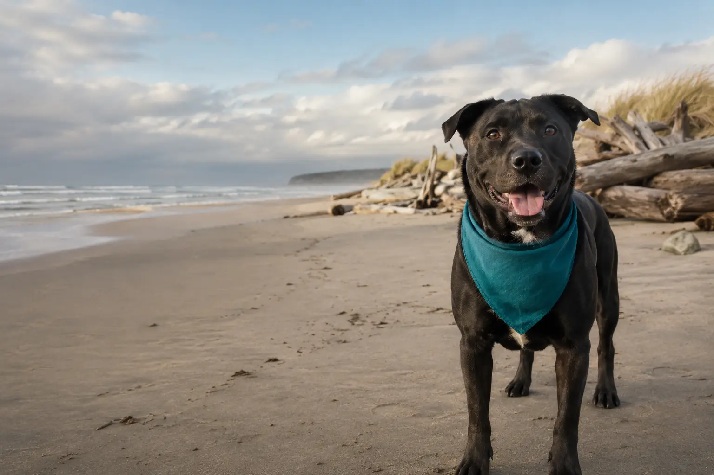

Ocean Shores, Washington
Second chances start at the shore.
Safe shelter, thoughtful care and a loving path home for animals who need us most.
Website concept · Representative image
Looking for home
Meet your next best friend.
Every animal has a story. Get to know who they are, what they love and the kind of home where they’ll thrive.
Our mission
More than shelter. A real chance to thrive.
At The Salty Dog Animal Rescue, our mission is to give every animal a chance at a healthy, loving future. We provide essential care—including spaying or neutering, vaccinations and microchipping—while working to combat pet overpopulation with compassion and commitment.
Animals awaiting adoption deserve more than food and water. They deserve love, socialization, training and daily enrichment that helps them become ready for their forever homes.
Essential care
Medical attention, vaccinations, microchipping and spay/neuter support.
Daily enrichment
Walks, training, affection and socialization from committed volunteers.
Thoughtful matches
A careful adoption process built around safe, lasting family connections.
Adoption process
Finding the right home takes care.
We want every placement to work—for the animal and the family.
- 1Start with a conversation
A brief phone interview helps us understand your home and what you’re looking for.
- 2Meet and greet
Spend time together and see whether the connection feels right.
- 3Home visit
We make sure the setting is safe and appropriate for the animal.
- 4Welcome them home
Complete the paperwork and begin your life together.
Give them a hand
Every walk, donation and shared post matters.
Salty Dog is powered by people in our community who give their time, resources and attention to animals who need them.
Get in touch
A little help goes a long way.
Want to volunteer or help with supplies? Send us a message and tell us what you have in mind.
You can also call (360) 580-9927 or email the rescue.